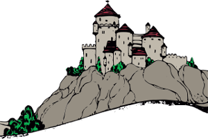

ŹRÓDŁA
HTML — Większość znaczników odpowiedzialnych za elementy strony
CSS — Większość znaczników odpowiedzialnych za wygląd strony
StackOverflow — pomocne forum, które przydało się podczas układania struktury strony
Wawel (1) — pierwsze zdjęcie Zamku Królewskiego w Krakowie
Wawel (2) — drugie zdjęcie Zamku Królewskiego w Krakowie ☺
Malbork (1) — pierwsze zdjęcie Zamku Krzyżackiego w Malborku
Malbork (2) — drugie zdjęcie Zamku Krzyżackiego w Malborku ☺
Warszawa (1) — pierwsze zdjęcie Zamku Królewskiego w Warszawie
Warszawa (2) — drugie zdjęcie Zamku Królewskiego w Warszawie ☺

Poznań (1) — pierwsze zdjęcie Zamku Królewskiego w Poznaniu
Poznań (2) — drugie zdjęcie Zamku Królewskiego w Poznaniu ☺
Wikipedia — większość informacji na temat zamków znajdują się w tej encyklopedii
© 2017 by Konstanty Dmochowski. Strona o zamkach w Polsce.